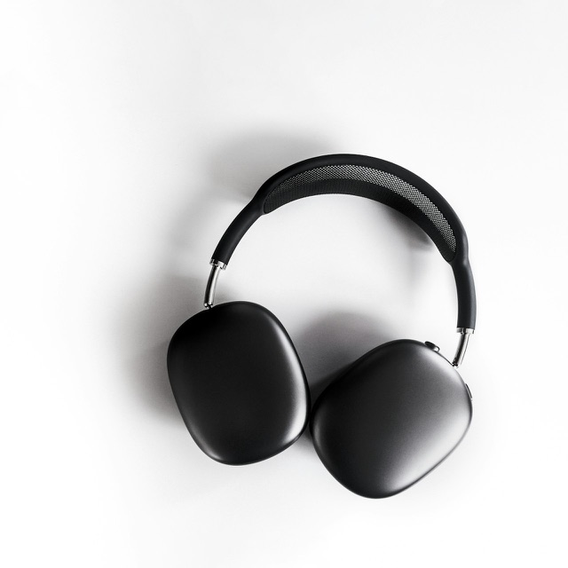

Apple AirPods Max
$549
Over-ear headphones with active noise cancellation and spatial audio. Free returns.
Tap ⋯, then Share, then Caché.
Not in the row of apps? Scroll it to More and add Caché.
Saved it? Back to Caché

$549
Over-ear headphones with active noise cancellation and spatial audio. Free returns.
Not in the row of apps? Scroll it to More and add Caché.
Saved it? Back to Caché